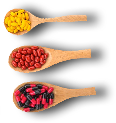

Hi, I'm Paul
And in a matter of minutes, you'll discover why this pair of handcuffs carries the SECRET to reversing the negative effects of fatigue and burn-out...
Evaporating the dreadfu; harm that aging is causing on your body...
And you'll see why these "ordinary" handcuffs carry the secret to returning your body back to optimal health - so you can have more energy, get more done, revive your sex drive, boost your mood, and so much more.
That's right you'll uncover proven energy and mood boosting secrets simply by watching this presentation today to the very end...tips like:
- A little-known method of increasing your energy levels without endless exercise...
- The fastest way on earth to boost your mood without relying on harmful drugs or pills...
- The number 1 KILLER when it comes to overcoming fatigue and why you must AVOID this at all costs(this is a mistake even "healthiest" people make , and it will ruin you rchances for success!)
What are the odds that you'll discover something totally unexpected?
I can tell this: what I'm revealing toady is the citting edge of well-being:fresh, new, and different...
And a few of my quick tips I'll be giving you today will get you started within MINUTES on the path to feeling amazing each and every morning, day, and night.
This will not only renew your hope.... it will change the way you look at things forever.

Just picture in your mind how much better your life will be once you finally start waking up feeling energized and excited about your day.
First though, I feel the need to share a story with you that, frankly, makes me look like a complete idiot when it comes to having youthful vitality.
And you'll understand why this almost got edited from the final cut in a few minutes, so brace yourself and keep your eyes glued to the screen.
You'll see why my embarassing little episode is so important to YOUR success in just a couple minutes... deal?
And you know what? Here's what's funny to me: I now get comments like, 'you were probably always up-beat, energetic, and full of smiles' - while in fact, I used to be the exact opposite!
Thinking back, that was all only a little over a decade ago - in January, 2002...
I had Just gotten into another huge argument with my wife, and I felt as cold inside as the weather felt outside.
I was bundled p in 2 overized jackets, and these rediculous looking gloves I found at a thrift store that made my hands look like something out of a science fiction flick.
I had already told my wife I was on the way home so we could finally have our long awaited “romantic date night” (which I planned with her as a hail-mary attempt at reviving our deteriorating marriage.)
However, I just looked at the time, and realized I already put in yet another 12 hour work shift, and it was almost pitch black outside.
And, just like the weather, I felt blue deep inside and you'll see why in a few minutes.
You see...

It was no big secret to anyone that I was already over-exhausted, anxious, and somewhat depressed - and that it simply wasn't going to get any better unless I took action (and I eventually did, just like you're about to today...)
However, even though I knew I was ready for a change, I needed
one more thing to really push me over the edge and get me to
move from feeling sluggish and defeated, to energized and alive.
Anyway, I can't believe I did this, but I got into my car and decided
to drive home after my 12 hour shift - even though I was sleep
deprived, moody, and in a mental haze...
Then, right there, in that moment, IT HAPPENED:
Two cops flipped their sirens on, pulled me over, checked me for outstanding warrants, and BAM:
They slapped a pair handcuffs on me - and I found my ass in jail for the entire night.
Turns out, I was so exhausted and "mentally unfit" to drive, and I was swerving all over the road like a mad man...
And these cops thought that:
A) Either I was “joy-riding” in a stolen vehicle...
B) I was so drunk that I was a danger to myself and
anybody who was anywhere near me.
And look: if you've ever been pulled over for suspicion of DUI or being some sort of wanted criminal,
I'll tell you right now that it's no fun at all.
They treated me like dirt and made false accusations, so naturally I snapped back with some attitude
and became uncooperative.
The end result was me being slapped with a pair of handcuffs, and told I matched the description of
a “wanted felon”...
Me having to spend the rest of the evening in jail, causing me to MISS my long-awaited date night with my wife.
Now, this was a big deal because our relationship was already on the rocks. She accused me of being cold, distant, irritable, and always too tired to do anything.
She said I never showed any romantic interest in her anymore, and yes... unfortunately this was completely true.
Yet, it's not that I wasn't in love with her anymore. It was nothing like that.
It was more because I was feeling so drained from our arguments, from my demanding job, and from life in general, and I was simply feeling "burnt out" in every sense.
Anyway, I used my "phone call" in the holding cell to call my wife, and tell her what happened.
Naturally, she thought I was making the whole thing up, and it wouldn't have made a difference if I did anyway because the bottom line was that this was her breaking point.
She was beyond upset, and told me she was packing up her stuff and leaving "for a few days."
Let me tell you: as I sat in the holding cell, I felt miserable, alone, and like my entire world was collapsing around me.
I felt like I had hit rock bottom... and that I had failed to live up to the expectations of everyone who loved me...
I was beginning to feel completely depressed and borderline worthless, as if my life had not even been really lived, and I was just killing time between birth and death. (yes, it was getting THAT bad!)
I made a vow -- a promise to God -- that was like my own
personal Declaration of Independence:
"I will NEVER, EVER act or feel this way again... and I will solve all of this or DIE TRYING!"
I swore that I'd read 100+ books on the subjects of vitality, health, improving my mood, and everything else in between.
I told myself I would scour the Internet, research journals, and pick the brains of the top pros to discover the secrets of finally feeling GOOD...
I promised myself I'd spend every non-working hour of every day, no matter what, perfecting the art of Infinite Vitality.
Fortunately, I ended up formulating a step-by-step, PROVEN Blueprint that I've followed, and thousands of others have followed, that creates MASSIVE success in improved energy, mood, concentration, and motivation...
And today, I'm going to share it with you - and save you the money, the hassles, and the YEARS of effort it took me to hone this system into perfection... so KEEP WATCHING.
Just keep in mind that, even though today I've been very successful helping folks like you overcome fatigue, burnout, stress, and more -- I'm EXACTLY like you are in so many ways.
I just happened to figure out a really simple, step-by-step Formula for the average person like you and me to see massive results when it comes to having all the energy and vitality that we’ve ever desired.
This is a System that allows people just like us - real, everyday men and women - to improve our relationships, be more productive, feel better about ourselves, and enjoy life to the fullest.
This is a Formula designed with YOU in mind, and tailored for folks like us who demand:
- Peace of Mind
- More mental and physical energy
- More time out each and everyday
- Better productivity
- Increased levels of happiness
- Better sleeping habits
- And MORE out of life!

Now, this isn't just the Blueprint I teach thousands of other folks, just like you...
It's the Blueprint I used myself to enjoy getting up in the morning, sleep like a baby at night, patch up
my once-damaged marriage, excel in my career, boost my energy and sex drive, and a whole lot more...
And it's the same exact System I'll be sharing with you today, so you can finally experience results like these for yourself!
Yes, I'll be covering all the details of my discovery with you in just a moment, however, first I feel that I MUST warn you about the REAL problem you face today.
This is the hidden foe - the real VILLAIN - behind you feeling burnt-out, emotionally exhausted, stressed or depressed...
And why feeling un-focused, un-productive, and un-motivated is NOT your fault!

Now, this may surprise you, even anger you, but you've been lied to for YEARS, unknowingly - and these lies prevent you from succeeding at achieving the levels of well-being and vitality you truly desire.
Many folks believe that you have to exercise like crazy and take an array of pills, supplements, and even drugs just to see improvements in your energy and mood.
And, maybe you are one of those people, just like I was (I used to believe this!)
HOWEVER: That’s all a load of nonsense - please, if you have ever believed this, stop right now! I'll explain why in a moment...

For right now, just know this: countless other smart men and women have fallen victim to this rather clever lie, yet you have to lay it aside right now...
If you don't, you may find yourself in a bigger bind than you were before you even started!
And, you may even find yourself addicted to pills, jumping from one diet to the next, and draining even more precious time and energy on excessive exercise...
So listen: this is not what I want for you, and I know it's not what you desire for yourself...
And you know what? This is the reason your lack of energy and drive is NOT your fault...
However, as of now, it's your ethical responsibility to resolve
Look...
Sometimes we tend to blame ourselves, but I'm asking you NOT to do that...
Instead: Have a look at the real villain: the so-called "health experts!"
That’s right. All their misinformation is enough to confuse the smartest person alive, and it confused me for years...
However, what’s more interesting is that a brand new study was doneby Cornell University & Tulane University on these self-proclaimed “experts.”
And, it revealed that MANY experts nowadays are just making uptheir own credentials, creating fictitious facts, and preaching false advice that they THOUGHT wasactually cold hard "truth!"
For example: there’s those “health bars” and “nutrition snacks” that you see being sold everywhere on the internet, and in the markets all across the world...
We’re told they’re healthy and contain an “ideal ratio” of nutrients, and they’re good for us, right? And that they’ll boost our energy, and provide good nutrition in addition to our regular diet?
Well, a recent Ohio State University study compared the glycemic index of typical energy bars with other sources of carbs. And these “power bars” were found to be no better than a candy bar at providing sustained energy!
So, the fact of the matter is you should never solely rely on this "expert advice" you see in articles, magazines, YouTube videos, and on social media.
That could cause you to become dependent on sugary “miracle snacks,” or even lead you to become ADDICTED to pills or supplements...
Or, screw up your sleeping habits altogether - either sleeping too much or too little...
Or, become reliant on exercise alone, and overdo it to the point of exhaustion.
And worst of all, you'll end up blaming YOURSELF for the fact that none of this stuff is working! Then, it's back to square one.
So, now that you're aware of some of the lies, and how they've crippled your energy levels and vitality for years...
It's time to dig in and rise above this, using these 3 tips I have for you today.
Without these tips, your path to infinite vitality will be hit and miss; yet using these simple strategies, you'll propel yourself forward to your goals in no time.
Just remember: I'll be sharing my most important, life-changing tip last - the “Cycle of Youthful Vigor” - so keep watching until the end...
Yes, my “Cycle of Youthful Vigor” is going to be covered last – first though, I want to get started and share a simple tip with you that will get you started on the path to success today:
You absolutely must know about the “Fad Diet Pitfall” you HAVE TO AVOID if you want to increase your energy levels and well-being... and this one may surprise you:
You see, most people believe that following Fad Diets is actually a good way to look and feel better, at least in the short term... however, this simply isn't true:

If you don't avoid these kinds of diets, you will experience energy slumps, sugar cravings, exhaustion, and eventually - weight gain...
Think of it like this: look back to the last time you experienced any stress or fatigue. Did you crave salty, sugary, or carb-filled foods... maybe even junk food or fast food?
This is a sign that the type of foods you’re eating while on a fad diet are actually causing your entire metabolic cycle to malfunction.
It eventually makes your body BEG for foods high in sugar, salt, and carbs... not to mention, it rapidly drains your energy.
With that said, here's the secret: STOP following any kind of fad diet, no matter how cutting-edge, popular, or tempting they may be.
And you don't have to avoid them forever - just until you've reached your ideal goal of increased vitality, so don't worry.
Here's what you do instead: just narrow your focus onto things like vitamin D and omega-3 fatty acids, and make sure you balance them at all at the right ratio... if you do this right, you may never need to starve yourself or eliminate entire food groups from your diet ever again.
You'll wake up every morning feeling energized and excited abouut your day.
You'll also know for a FACT that you're eating right foods, in the right quantities -- because you will see and feel the difference not just in your energy levels... but also in your dress sizes or your waistline.
(The benefits of this simple tip continue to astound me, and the thousands I've given it to!)
Now, another one of the things that really shock my readers is the fact you can actually ENJOY taking naps on your path to unlimited vitality...
Look, I used to HATE taking naps because of how I felt after. However, I've figured out a way to be SMART about napping, and that allows you to feel refreshed and rejuvinated every single time...
First, I want you to think about a cat or a dog... how these kinds of animals are either active, or asleep, and never anything in between.
Then, realize that you can be the same way yourself by napping for certain time intervals during the day, so you can AVOID those waking hours where you’re walking around, feeling like a zombie...
Plus, the beauty of this is that, taking naps in these specific time intervals lets you catch up on shut-eye, while boosting productivity, mood, and so much more.

So, just picture this: You'll never have to feel guilty about taking naps again, or worry too much about getting a good night's sleep because you can always play catch-up during the day...
PLUS, you'll also experience a mid-day kickstart in your mood AND your energy at the same time.
And now, it's about to get even better, because I’m about to share my most VITAL tip when it comes to unlimited vitality:
Without applying this tip to your new strategy, you can virtually forget about succeeding... this is THE most important tip of all...
This is the tip that will allow you to not only boost your mood and energy levels...
This is the tip that will allow you to keep yourself feeling good, so you can get more done, and go to bed every night feeling happy and PROUD of all you got done that day.
This is the Superstar Strategy. The best of the best use this, and now so will you... I callit my “Cycle of Youthful Vigor.”
Here's how it works: first, you need to recognize that there are natural forces beyond your control. These forces are responsible for the highs and lows - the ebbs and flows - of your energy levels... think of them as "natural rhythms."
Then, all you have to do is sync your day with these natural rhythms, and make sure that you time it just right, so that you are at peak energy levels when you need to get things done the most.
With practice, you'll sync your body and get all the timing down, and you can literally CONTROL your own body’s rhythms and energy cycles.
Now...
I think you'll agree that I covered some really valuable tips with you today, and I feel you may be a bit overwhelmed with it all... which is totally understandable.
All this really means is that you have 2 simple choices to make, right now:
Or, you can take

I've put in over a decade of research and experience, and put together the formula to reach ideal levels of vitality, all with folks like you in mind...
It's a System that I've perfected and tested for years on countless thousands of men and women like you, and it works virtually every single time.
And it's called the
Infinite Vitality System

Hi, I'm Paul Anderson, the creator of the Infinite Vitality System.
The Infinite Vitality System is THE clearest, simplest path to developing unlimited levels of natural energy and feeling good, while enjoying more peace of mind.
This tested, proven, and efficient Blueprint for higher energy and motivation can work for you, EVEN you:

- Have a Super Busy Schedule (This Is Lifestyle Friendly!)
- Feel Overwhelmed Or Anxious Right Now
- Work A Stressful Job or Live A Hectic Lifestyle
- Hate Getting Out of Bed In The Morning
- Can't Commit An Exercise Or Diet Program
- OR even if you THINK you've tried everything!
However, to save your time (and mine), let me be upfron and tell you what the Infinite Vitality System is NOT, before I tell you what it is...
This system is NOT yet another "Fad Diet" or "Hollywood Starvation" plan...
It's NOT about killing yourself with exercise, or taking silly pills that don't live up to theirpromises.
You see, I think you've been deceived enough by "expert" health marketers and those sleezy ads... however, THIS is the bonafide real deal.
C’mon... don't you think you've been lied to enough? Isn't it time to start using what's PROVEN to work?
What makes the Infinite Vitality Blueprint truly unique is the fact that I spent over 10 years interviewing experts and analyzing real-world case studies...
I uncovered hidden patterns and unique (sometimes 'odd') tactics they use to be and STAY healthy, energetic, and feeling GOOD in today's busy world..
The techniques, "do this next" strategies, and the "avoid THIS" lessons are now yours to replicate... and that means:

- Having more physical, mental, and sexual energy
- Enjoying getting out of bed every morning to start your day
- Reversing the dreadful effects of stress, burnout, and sluggishness
- Having the freedom to get more done, enjoying your hobbies, and just simply having MORE TIME to yourself or time with loved ones
And so much more.
Now...
Before we go any further, I need to come clean:
I hope you're not someone looking for "push button solutions" or "magic pill fixes"...
Or some other plan that you already know will never, ever work for you...
You know what I mean, and let's just be honest: none of those things are solutions, they are train wrecks
waiting to happen, and you KNOW they don't work.
If that's you, and I'm trusting it's not, then you need to leave this website right now...
Because I’m not going to give you 'impossible' results -- just SOLID results.
This is for men and women who are ready to stop looking for "miracles," and instead start ensuring results...
And what I've done is make the Infinite Vitality System as easy as humanly possible, so while this isn't "easy" (nothing worthwhile is), THIS makes it more of a snap!
Significantly lower your stress levels while enjoying more peace of mind...
Finally begin to wake up feeling energized and excited about your day...
Reverse the harmful effects of aging on your body...
Revive your sex drive and sexual desire...
Melt away the feelings of brain fog, sluggishness, lack of motivation, and so much more...
Then guess what? The Infinite Vitality System isn't "an answer" for you -- it's the ONLY ANSWER for you.
Just see what Preston McGuire from Brooklyn, New York is saying.
He writes:
A friend referred me to this site, and to be honest I didn’t think this would work for my problem. I suffered with fatigue and stress since for what seemed like a lifetime. Well, after following your system for a couple weeks, I was amazed by how alive I started feeling, and how hopeful and positive my outlook on life became. So, from the bottom of my heart, thank you.”
And Adrianna Bay from Los Angeles, California… she writes:
your program, but I decided to give it a go anyhow. I figured I had nothing to lose. A few years ago, I was experiencing nonstop energy slumps, and I had no motivation to do anything. I thought my life was going downhill. However, after using your system I feel as active and alive as I did in my early 20s... life is great, and I can’t thank you enough.”
Now, just take a LOOK at just a couple of the things you'll receive today inside today inside the Infinite Vitality System:
You'll discover the secret behind the elusive “Peak Performance Power-Nap”...
The proven way to catch up on missed sleep the night before, or boost your energy, mood, and concentration literally at-will.
With this, you'll actually ENJOY taking naps, WITHOUT feeling tired, guilty, or groggy right after them.
You'll also uncover all the secrets to my “Cycle of Youthful Vigor.”
This will allow you to cut straight through the energy-draining hustles and bustles of our busy life...
And instead sync your body with the natural rhythms of nature... so you can maintain peak energy levels throughout the day, ESPECIALLY when you need it most.
Now, you've no-doubt noticed that the Infinite Vitality System is, without question, the fastest vitality restoring book there is...
As it allows you the most efficient way to kick start your overall energy levels, drive, and mood... and MAINTAIN it for the rest of your life.
And, the results come in a timely fashion too, so it goes without saying that THIS makes your life MUCH easier.
Now, you may believe that a Blueprint that could do all of that (and much more) costs a pretty penny...
And, in all honesty? It really should. Especially considering the Infinite Vitality System has been changing the destiny of thousands of people since its launch, right?
Don’t worry...
I'll cover the cost, and the discount you'll get today by ordering from this page with youin just a moment...
First, I want to share a few more unique benefits this one-of-a-kind System will deliver to you.
You will unlock the power of the “Biological Body Breakthrough” right out of the gate in the first few pages...
(I won't go into details here, but it's absolutely one of my favorite strategies for optimal health...)
That's not all: you'll learn the secret of AVOIDING the “Stress Circuitry Overload” - and this ALONE is worth the investment in Infinite Vitality System...
And how about being shown the most clever way possible to drop some pounds while you skyrocket your vitality and energy, WITHOUT needing to eliminate carbs or follow a super “strict” diet - nice!
Now, the regular price of the Infinite Vitality System is probably a lot lower than you’re thinking -- and I'll explain why in just a second.
First, I gotta tell you that you're not just getting the Infinite Vitality System blueprint today. Nope, I'm just getting started...
Just for watching this entire presentation today, I'd like to give you THREE value-added bonuses free of charge, just to help you achieve new levels of vitality even faster:
The first gift you'll be receiving today is the Infinite Vitality Video Series, where you will find out how you can jump start your energy and vitality in just 7 days.
And you won’t have to pay a dime for it… nope, it's yours FREE today!
Next, you’ll receive a cutting-edge downloadable book called Natural Insomnia Cures. This is for YOU if you've ever suffered through sleepless nights, only to wake up in the morning feeling more drained and foggy.
(This book will give you all the tools you need to ensure that NEVER happens again.)
You'll also get the Natural Headache Relief blueprint. This is THE most natural, safest, and easiest way to BANISH headaches from your life... without harmful pills, drugs, and WITHOUT having to bang your head against a wall!
Now, it should be crystal clear why the Infinite Vitality System should have a hefty price tag - and that's excluding all those incredible bonuses...
However, just for watching this presentation today, I have a much better deal coming your way so keep watching, because it won't last much longer.
And sure, you could just walk away now, chance it, and keep going down the road you're on now...
However, you’ll probably end up spending 10, 20, even 100 times more than the investment you'll make today in Infinite Vitality System in trying out more fad diets, taking more time off work, and on doctors’ visits and other medical costs...
Oh, and then there's the gym memberships you may be tricked into purchasing by over-enthusiastic salesmen, convincing you that killing yourself in the gym will be the magic bullet to all your energy issues...
Listen...
I'm ready to make this all a no-brainer decision for you today:
To put it plainly: I’m offering you a massive deal.
It’s my online-only offer... you've saved me time and money in running expensive ads, so I'm just giving it right back to you...
Plus, I simply cannot let "price" get in the way of you achieving YOUR health goals, as well as helping me make a positive impact on the world.
That means you will not be paying $97 for the Infinite Vitality System today...
Your investment is only a FRACTION of that...
And as ridiculous as it sounds, you won't even pay $79 today.
Rather, your investment today in the Infinite Vitality System is:
Just ONE Payment Of Only $47.
You need to look below this presentation right now:
Then, to lock in this price, CLICK on the yellow order button that says “Add To Cart”

Listen: Don't decide right now... take advantage of my Unconditional "Triple Guarantee":
I want you to try Infinite Vitality System ON ME for a full 60 days...
If youu do not feel your energy levels surging, and your mood lifting... OR:
Even if you don't like the FONT I use in the book! It doesn't matter... I'll refund your money...
And forget about hassles - I'll happily refund every penny, because I am commited to producing results for you, no matter what!
have a look below this video NOW:
Click on the yellow button that says "Add To Cart" and lock in your discounted price today!
Just have a look a what Sherry Batten from Laurinburg, North Carolina did after following my Infinite Vitality System Formula...
"Diet, exercise, drugs, therapy – it seems like nothing I tried would ever work. It seemed like I’d always have poor sleeping habits, and endless fatigue to match. But your presentation turned it all around, because I had a specific guide that made a real difference on every inch of my body and brain. I’ve been off my prescription and over the counter medications for months now, and I’m even back to salsa dancing with my husband and spending quality time with my family, and I can’t even tell you how great it feels!"
Now remember: It's not just a fantastic bargain you'll be receiving today:
You'll also get all THREE added bonuses - free of charge, as well as join the ever-growing Infinite Vitality System satisfied customer community...
Not to mention the fact that you'll impress your friends, family, coworkers, and everyone else when they see your progress, your newfound levels of motivation, and that you're simply having more energy and FUN every single day in your new life.
For INSTANT ACCESS to everything, Click on the yellow button that says "Add To Cart" NOW...
Within literaly a few minutes, you'll have everything at your fingertips: the entire Infinite Vitality System, the Infinite Vitality Video Series, the Natural Insomnia Cures AND hr Natural Headache Relief - all inside the secure members area...
So your order will be smooth and easy today, I want to show you EXACTLY what to expect after you click the order button below:
First, you'll be taken to out 100% secure checkout page, which looks like this:
In this 100% secure checkout page, you just input your order information here on the left hand side, and when everything looks good youu just click the button to proceed.
Then, after you order, you can select the add-ons you prefer to help you start boosting your energy, mood, and overall levels of youthful vitaltiy even faster...
Finally, you'll arrive at our secure member's area, which looks like this:
It's That Simple
Just Remember: Life is short, and you've been struggling with low energy levels for far too long...
And there's real pain waiting for you if you choose to continue in a state of inaction: frustration, resentment, a feeling of loss...
And continued decline in your energy and mood.
YET: Simply by choosing to take action today, and divving into my easy-to-start Infinite Vitality System, everything will change for the better...
See, this is the vision I have for you:
Today, you finally have THE answer to your challenges...
You'll be brimmin with excitement
Full of energy... seeing success at every turn...
You'll be able to experience each day to the fullest, feeling happier, and having more energy to spend time with your loved ones - starting today...
You'll be able to start experiencing the life you deserve - at long last!
Yes, it's true: Your fatigue and burnout, up until today, has largely been no fault of your own...
It's true that you've been lied to in the past about quick-fix solutions...
The fad diet and exercise "plans" you may have tried...
And then there's all those false promises no one stands behind...
Yet, today is your day to CLAIM your power and take responsibility: to take action necessary to put an end to the lies, and begin anew on a REAL Plan that SIMPLY WORKS!
Yet, unlike all those phony solutions, this one is GUARANTEED to work for you:
Try Infinite Vitality System for 60 full days, on me... and see the results you desire, or you pay nothing!
So, you've bought Infinite Vitality System... what do you do first? THIS:
Download the system immediately and hop onto page 2 so I can start to reveal to you the overview of this entire blueprint, and the truth behind exactly WHY you have been suffering lately (this is CRUCIAL information for your fastest progress)
This will guarantee you begin right where you need to start... and give you a good idea of how to get from where you are, to where you want to be.
Just do not put this off one second longer... and here's WHY:
First, as you will recall, I lowered the price of Infinite Vitality System for you by well over HALF... just so you can get in today...
Yet, eventually, I'm going to have to increase the price back to retail, where it deserves to be...
So be SURE to act today, before simple economic forces me to increase the pricem okay?
And look...
There's a chancce you may do what so many others do and put it off... you know, for "a few more days?"... which turns into months... even years?
Winners act when they know a good thing... and this is a GOOD THING... so don't risk your future by "hoping" another answer will come your way...
So, now we both know what you REALLY want and need:
And make sure you do the SMART thing... the ONLY smart thing to do:
Get my online-only limited-time discount while it's still available to you, and before someone else takes you spot...
And wisely get on the right path TODAY to unlimited and infinite vitality, using this simple, proven, step-by-step strategy.
CLICK the yellow rectangular "Add To Cart" button below right now, and let's get you started today!
Still here? It's OK, I can imagine this presentation was quite different from other ones you've seen before.
With that said, let me take a minute or so and go ahead and answer some of the most common questions I get asked:
I've seen other programs like this before... and they didn't work so well for me. Why will this be any different?
The reason is simple. You cannot reverse fatigue and burnout by focusing solely on sleeping more, or sleeping less, or by just following some fad diet, or relying on excessive exercise alone.
This program takes a multi-pronged approach, and attacks all the sources of your low energy from the core.
By following this program, you can "reprogram" different parts of your body and mind, where all those other programs only focus on one simple area... and, those other programs only offer short term results.
So for the first time in youur entire life, it's not only POSSIBLE to feel newfound levels of energy and vitality...
It's also possible to increase your mood, boost your sex drive, feel a daily surge of motivation, and so much more.
Do you have a guarantee or a refund policy if I decide it’s not right for me?
The first step would be to make sure you’re following all the steps as outlined inside the digital book, and the accompanying bonus video series.
But remember, there is literally zero risk with the Infinite Vitality System.
You have a full 60-day, 100% money back guarantee. Meaning that, if at any point during the 60 days, you decide it’s not for you, you can ask for a full refund. No hassles, no hard feelings. You don’t even have to return the product.
Your satisfaction is 100% guaranteed!
What about all that diet and exercise advice I’ve already learned and tried?
Well, right now, all that “learning” is part of what’s holding you back… until you first unlearn all the “fad advice” you’ve heard about creating lifelong energy and vitality. Then… the sky’s the limit!
How soon can I expect results?
Well, everyone is different, and not everybody responds the same way to the Infinite Vitality System.
However, some people do experience powerful results the very next morning.
Others take some time. So we ask that you just follow the blueprint as directed, every day for at least 7 days, before you fully evaluate your results.
Are there any harmful side-effects with Infinite Vitality System?
None.
Is my personal information safe?
Yes. In fact, your personal information could not be safer.
When you order Infinite Vitality System, you will be taken to a secure checkout page hosted on ClickBank.com. ClickBank uses the highest level 256-bit encryption technologies using Secure Sockets Layer (SSL) from trusted vendors like Verisign to encrypt any kind of sensitive data.
Plus, ClickBank is the biggest, most trusted online information retailer in the world.